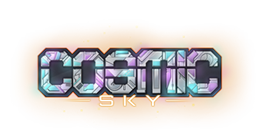

The skyblock branch of the CosmicGames server list has announced the End-of-Life for the server. After ~1 year of a weak community, the servers main admin LDram announced that CosmicSky will shut down on the 25th. While as sad as it is, most of the community agreed that the end was near, and so it was.
The common agreement the community has said (including long-time player EpicminerNK) "The admins never listened to the community. They always added useless updates that would do nothing, or hurt the core community";. But why did the admins never listen to the community? They had whole functions setup in their discord and forums, yet the community is angry at the core team. However, no one knows why the admins never added suggestions as frequently.
Actually... yes! Another one of the older players Skulzers has had a project in the works titled "MidnightSky". A server meant to replicate Season 2-3 while also introducing some of Sky's more latest features. I've taken the liberty to form a table of features from Cosmic and Midnight, to see how they compare when it comes to their features.
| Features Table | Feature |  |
|---|---|---|
| Custom Enchants | ✓ | ✓ |
| Skins System | ||
| Adventures | ||
| BAH | ||
| KoTH | ✗ | |
| LMS | ||
| CosmicClient Support | ||
While MidnightSky has had a rough start to the season, it has the potential to grow into a bigger project, not just containing old Cosmic players. However any early-release will have bugs, Midnight is no exception. They've been very good at fixing bugs and ading new features very quick, however they're often smaller patches/updates that get introduced, however the icf dupe bug was quickly patched within 5 hours of it being found out.
Made with Stupidity, Stackoverflow, and a Small Brain. @GGUC